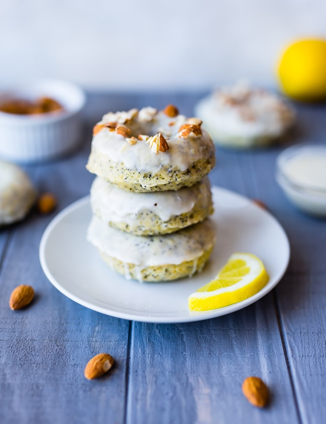

Lemon Cakes

RKK Lemon Cakes
Once named the greatest dessert in the world, this sweet treat is great paired with iced-cream or perfect on it's own. Try this easy to make-at-home version today!
Ingredients
- 1 cup (2 sticks) unsalted butter, softened, plus more for pan
- 3 cups all-purpose flour (spooned and leveled), plus more for pan
- 3/4 cup low-fat buttermilk
- Zest of 2 lemons, finely grated
- 1/3 cup fresh lemon juice (about 2 lemons)
- 1 1/2 teaspoons salt
- 1/2 teaspoon baking powder
- 1/2 teaspoon baking soda
- 2 cups sugar
- 5 large eggs
Steps
- Preheat oven to 350 degrees, with rack in lowest position, and grease your cupcake pans.
- In a small bowl (or liquid measuring cup), combine buttermilk with lemon zest and juice.
- In a medium bowl, whisk together flour, salt, baking powder, and baking soda.
- With an electric mixer, cream butter and sugar until light and fluffy.
- Add eggs, one at a time, beating well after each addition.
- With mixer on low, add flour mixture in three parts alternately with the buttermilk mixture in two, beginning and ending with flour; beat just until smooth (do not overmix).
- Divide batter evenly between pans; smooth tops.
- Bake until a toothpick inserted in centers comes out clean, ~15 minutes (tent with foil if browning too quickly).
- Cool 15 minutes in pan. Turn out cakes onto a rack; cool completely before glazing.